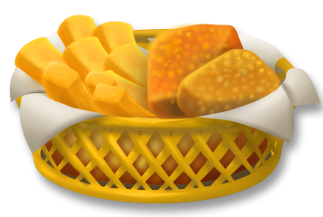

Fish and Chips
No portem ni dos hores a Londres i ja estem plens de fish and chips. A bon menjar, tres vegades trincar.
Al final em vaig decantar per un "fish and chips". Per què? Doncs perquè és una d'aquelles menjars de carrer que em va cridar molt l'atenció.
Amb 17 anys vaig anar un estiu sencer a Escòcia. Allà em vaig enamorar de la seva terra, la seva gent ... i del "fish and chips".
No he tornat a menjar "fish and chips" les altres vegades que he tornat al Regne Unit.
Pel que sembla, el naixement del fish and xips es remunta al London East End on Joseph Malin de 13 anys va començar a vendre patates fregides per ajudar la seva família. Després se li va ocórrer vendre les patates juntament amb peix fregit, i el 1860 va obrir la seva pròpia botiga, des de llavors fins a 1970 els Malin van tenir el primer negoci de fish and xips.